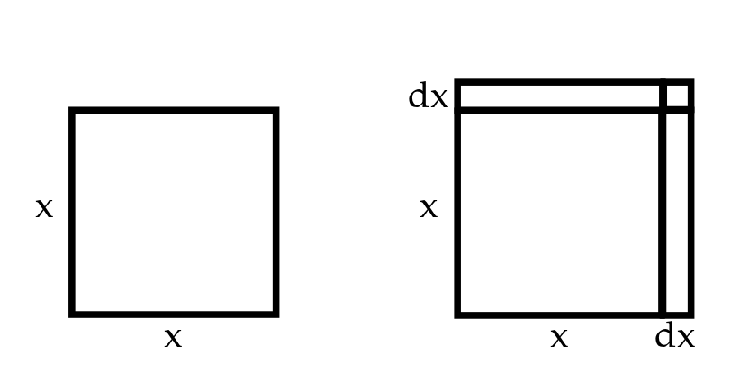
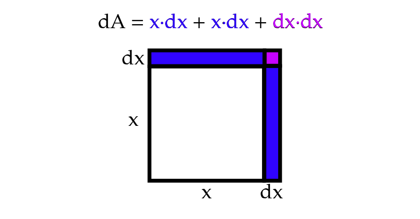
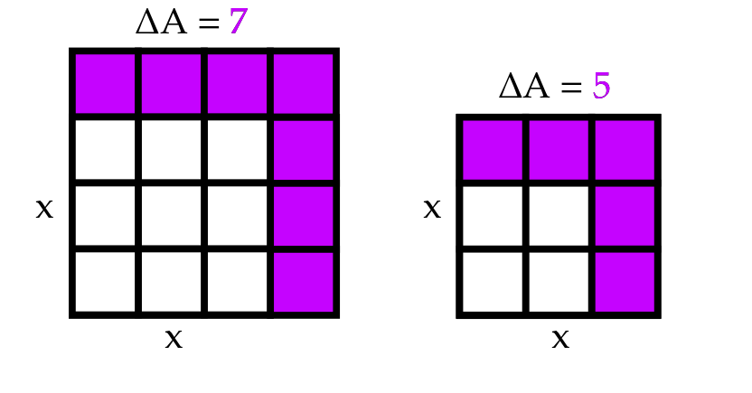

A Gentle Introduction to the Mathematics of Deep Learning: Functions and the Basis of Differential Calculus (1/2)
This is my third semester teaching differential calculus at the University of Arkansas, and if I'm being frank, I'm always extra disappointed in my ability to truly convey the importance of calculus. Finding myself in the intermediary realm between scientist, software engineer, and mathematician, I find the most appreciation for calculus in its sheer utility. Calculus is a tool, but a tool in the same way language is a tool. Just as language sets the foundation for practically all human interaction and expression, calculus has set a foundation for mathematical, scientific, and technological progress. It is practically impossible to exaggerate the value of calculus.
Budding engineers and scientists are usually tossed into introductory calculus and bombarded with rules and notation. Generally, a student’s first calculus course can be summarized as dreadful rote memorization in an attempt to stay afloat. While this blog post may not help you ace your calculus final, I'm hoping it does help you understand the value of learning calculus and provide you with the fundamentals for understanding machine learning concepts.
Calculus can be diluted to the study of change (derivation), content (integration), and the relationship between the two. Often "content" here is more specifically stated as the "area under a curve". While I think it is important to state this for clarification purposes, I suggest you begin to think of a function in more abstract terms than simply a "curve". A more practical and rather
In machine learning, you're likely to have a large number of inputs. For example, to teach a computer facial recognition you may give it some 640 x 480 pixel photograph resulting in 307200 individual pixels as inputs! Well, you wouldn't ACTUALLY feed a computer all that data, but IF we did we'd instead have an \(x_{1}\), \(x_{2}\), ... all the way up to \(x_{307200}\) inputs which would give us some output \(f(x_{1}, x_{2}, ..., x_{307200})\). This is something called a multivariate function, which is a multiple-variable function or a function with multiple inputs. For now, let's step back to only worrying about univariate (single input) functions...
Right about now, we should discuss one of the key symbols of calculus: \(d\) which we can think of as "a little bit of" or even "a little change in". So, back in the context of some single input function, we can say \(dx\) means a little bit of \(x\) or a little change in \(x\). Now let's try to visualize this: let's say we have an input \(x\) that corresponds to the length of the side of a square. In this case, we can consider area to be a function of \(x\) which we can call \(A(x) = x^2\) or simply \(A\) for short. Let's say we're interested in how the area \(A\) of our square changes if we add a little bit more length \(dx\)...
To calculate our little change in the area, \(dA\), we can simply add up the area of our three little boxes which will give us \(x \cdot dx + x \cdot dx + dx \cdot dx \) which we can simplify to \(2x \cdot dx + dx^2 \).
Now change can only be defined in terms of something else. In your childhood, your aunt might have remarked "You've grown so much!" to express how your height has changed since the last holiday she saw you. In high school physics, you probably spent a decent time studying velocity, which is distance over time. Similarly, what we truly want to know is our little change in area \(dA\) over our little change in length \(dx\). That is, we want to know the rate of change. Now looking back at our equation we can say: $$dA = 2x \cdot dx + dx^2$$ $$\frac{dA}{dx} = 2x + dx$$ Well, what we have here is almost something we can call the derivative... with a slight alteration. I might have been dishonest saying \(d\) refers to "a little bit". In reality it's referencing an infinitesimally little bit. In a calculus class, you'll likely spend the first 4 or so weeks tackling a concept called limits, but the modern idea of limits was actually invented over a century after differential and integral calculus! Calculus' inventors - Newton and Leibniz - were perfectly okay with considering all this stuff in terms of infinitesimals. While limits are very very important if you want to get all technical about mathematics, I don't think they help you in any way imagine what an infinitely small amount genuinely is. So, I suggest you alter your definition of \(d\) to the littlest little little bit that is still indeed a bit, rather than nothing. But since it is such a little little bit, let's drop it from our almost derivative and say: $$\frac{dA}{dx} = 2x \quad \text{ for } \quad A = x^2$$ This, as it so happens, IS the derivate! In essence, we can say that the derivative tells us the rate of change at an instant. Now that sounds a bit ridiculous, right? I'm claiming we can measure change when... nothing has changed? So let's step back and consider again how this square might change over a set change in x. Let's say we want to approximate the rate of change at \(x=3\). To do this, we'll instead measure how the area changes when our \(x\) increases from \(x=3\) to \(x=4\) (our left square) and compare it with the change in the area when our \(x\) increases \(x=2\) to \(x=3\) (our right square). For this section, I introduce the symbol \(\Delta\) which simply means "change in". That is, for this experiment, we are testing how a positive or negative \(\Delta x = 1\) influences the \(\Delta A\).
It seems our \(\frac{\Delta A}{\Delta x} = 7\) in our left square and \(\frac{\Delta A}{\Delta x} = 5\) in our right. Now, this \(\Delta x\) is a bit larger than our infinitesimally small \(dx\). If we wanted, we could keep doing this approximation with smaller and smaller \(\Delta x\) values and we'd find our \(\frac{\Delta A}{\Delta x}\) would get closer and closer to 6 with our left square always slightly above 6 and our right always slightly below. As it turns out, our derivate \(\frac{dA}{dx} = 2\cdot 3 = 6\) at \(x=3\). This means as our \(\Delta x\) gets closer and closer to (but never quite reaches) 0, our \(\frac{\Delta A}{\Delta x}\) will get closer and closer to our derivate.
So what we've learned today is that for the area function of a square \(A(x) = x^2\) the derivate is \(\frac{dA}{dx} = 2x\). Now, this doesn't JUST have to apply to our area, of course. It applies to ANY function \(f(x) = x^2\). While there are a bunch of rules out there giving us much more complicated derivatives, this specific derivative is absolutely critical to a large number of machine learning algorithms - and we've solved it simply using geometry!
I'm realizing there's still a lot of fundamentals to cover in regards to differential calculus, but I think I'll stop here and we can hop back to it after a quick lesson in matrix algebra next time around. In my followup lesson on calculus, I'll cover some more "traditional" concepts covered in differential calculus like tangent lines, maximas, and minimas. Thanks for reading!